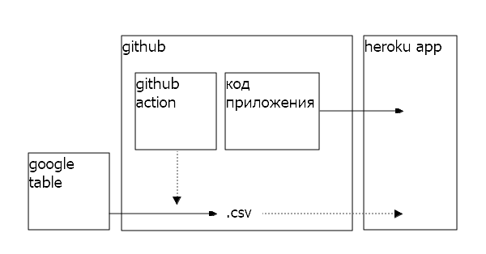
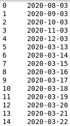

Итак, есть идея и есть даже какая-то реализация в виде просчитанной модели, которая умеет, к примеру, классифицировать, распознавать или создавать новые объекты. Нам понятно как она устроена и, возможно, мы даже полностью понимаем математику, которая лежит в основе модели. Пришло время представить наше творение потенциальным инвесторам, будущим партнерам, публике на отчетной сессии хакатона или просто друзьям. Можно было бы воспользоваться сервисом типа colab или связанного с ними kaggle и опубликовать код “как есть”, но вот беда - те, кому мы хотим это показать плохо разбираются в коде, зато явно ждут чего-то эффектного. А строить полноценное приложение долго и дорого, необходимо разворачивать сервер и тратить время, которого и так нет. Как быть?
Итак, вот требования быстрому старту:
- исходный код должен быть скрыт от пользователя - ведь мы же не хотим, чтобы ему стало скучно?
- необходимо разместить наш проект в интернете, чтобы разные пользователи смогли познакомиться с нашим гениальным изобретением
- наш проект должен получить готовые пользовательские интерфейсы, с помощью которых с ним можно было бы взаимодействовать
- нам очень не хотелось бы погружаться в разные языки программирования, а тем более в гипертекстовую разметку и прочий фронтенд
- точно необходимо избежать развертывания баз данных
- все нужно сделать быстро и, что важно, бесплатно
Такое чувство, что нужен какой-то zerocode, в котором есть чуть-чуть кода, но это не точно. Я нашел такое решение и в этой статье я расскажу о том, как развернуть наш МВП всего за пару дней.
Схема проекта
В качестве примера я построю приложение, визуализирующее данные о covid-19 для Калининградской области. В нем мы будем показывать пользователям различные представления табличных данных, попробуем визуализировать распределения и тренды. Мне понадобится:
- где-то хранить и обновлять таблицы с данными
- хранить код разработки приложения
- реализовать в клиентском браузере отрисовку графиков
- разместить актуальный код на сервере в интернете
Для этого я буду использовать следующий стек технологий и инструментов:
- python я буду использовать, потому что в целом на нем большая часть полезных инстументов для data science: обработка данных, моделирование, бекенд. Скорее всего, если мы беремся за машинное обучение, то прототип будет создан на python, поэтому есть смысл готовить МВП на нем же. Отлично. Теперь вся задача сводится к тому, чтобы выполнить всю остальную реализацию на python
- Numpy, pandas обеспечат реализацию моей задачи: мне необходимо обработать данные, а результат вывести в виде графиков в приложении. Pandas, который написан поверх numpy, как раз для этого отлично подходит. С помощью этой библиотеки можно осуществлять численные операции над двумерными данными (таблицами), не теряя семантику. Это важно для создания быстрых прототипов, когда особо нет времени на оптимизацию и легко запутаться в идентификаторах.
- altair - инструмент визуализации на python. Сразу поставляет необходимый фронт, в т.ч. и интерактивный. К тому же у него довольно простой и разнообразный интерфейс кода, который позволяет строить сложные визуализации не дорабатывая саму библиотеку.
- streamlit - с помощью этого продукта мы сделаем пользовательское приложение, тоже python. По сути streamlit оборачивает код на python, поставляет сервер и позволяет отображать результаты работы кода в вебе. Пакет специально был создан для МЛ-прототипирования, естественно нет речи о том, чтобы делать на нем что-то реально ценное, но мою задачу он решит идеально.
- github - тут будем хранить рабочий код и обновлять данные. Github обеспечит разработку и непрерывную интеграцию с сервером, где мы разместим streamlit-приложение. Github action понадобится для того, чтобы не бодаться с cron на сервере, а выполнять обновления данных там, где живет разработка.
- heroku apps - облачный хостинговый и серверный сервис с возможностью бесплатного размещения python проектов. Выбор пал на него по нескольким причинам: бесплатный, python в комплекте, размещение в два клика, интеграция с github.
- google sheets в качестве замены базы данных.
Вот схема проекта. В гугл-таблицах мы будем агрегировать данные, затем на github с помощью github-action делать предобработку и сохранять результат в .csv. Пользовательское приложение будет собираться на heroku, а данные получать из .csv на github. В итоге у нас минимум серверной работы, нет базы данных, а весь код написан на python. То что нужно.

Реализация
Python и все необходимые библиотеки у меня уже есть. Streamlit и altair довольно просто ставятся с pypi. Git на моей локальной машине тоже установлен.
Я создал новый аккаунт на heroku, указал, что разработка приложения будет вестись на python 3.8. Аккаунт на github у меня уже был. На гитхабе я создал отдельный репозиторий, main которого будет автомотически комититься на heroku при каждом обновлении. Интеграция гитхаба и heroku с автобилдами реализуется в два клика.
Чтобы реализовать связку heroku-github мне понадобится такая структра проекта:
- .gitignore
- .slugignore
- Procefile
- setup.sh
- requirements.txt
- файлы и каталоги приложения
В .gitignore добавлено все, что мы не хотим видеть в нашем репозитерии. На этот же файл смотрит и heroku при деплое.
.slugignore понадобится для того, чтобы спрятать какие-то объекты, которые находятся в репозитории на github уже от heroku.
В requirements.txt пропишем необходимые python пакеты. Heroku будет обновлять нужные библиотеки автоматически при деплое. К сожалению серверный установщик не подружился с тем набором версий пакетов, которые я указал в requirements.txt , но так-как мне не принципиально, то в конечном итоге я указал пакеты без версий: numpy, pandas, altair, streamlit
Procefile реализует на heroku то, что нам нужно запустить при старте сервера. В моем случае все просто, я конфигурирую и запускаю сервер streamlit:
web: sh setup.sh && streamlit run main.py
Простенькая конфигурация в setup.sh
mkdir -p ~/.streamlit/
echo "\
[general]\n\
email = \"oformleno@gmail.com\"\n\
" > ~/.streamlit/credentials.toml
echo "\
[server]\n\
headless = true\n\
enableCORS=false\n\
port = $PORT\n\
" > ~/.streamlit/config.toml
Само приложение я разбил на две части: пользовательскую часть и часть, которая будет готовить данные.
Пользовательская часть в файле main.py содержит исполняемый код на python, который будет запускаться при доступе по адресу страницы приложения. Собственно этот код содержит в себе все, что взаимодействует с остальными данными на heroku и отображает пользовательский интерфейс. В первую очередь приложение потребляет данные, на основе которых строятся визуализации. Так как данных немного и у нас нет БД, я их получаю из .csv, который расположен на github. Данные я сразу преобразую в массив pandas с помощью read_csv(), а из массива сразу строю графики на altair.
Далее, все что отрисовал altair, а так-же тексты, гиперссылки и другой контент отображается из python на страницу в браузере пользователя при помощи streamlit. У последнего довольно тривиальный набор методов, есть нужные мне интеграции, довольно простая и понятная документация и множество готовых решений от комьюнити.
“Серверная часть” расположена в dataprocessor.py. Этот скрипт запускается на github с помощью github action и решает следующие задачи:
- google sheets позволяет агрегировать данные руками или регулярно выгружать туда данные скрапером, но в конечном итоге это не БД. Структура данных там архаична, есть пропуски, не хватает некоторых столбцов и значений, есть проблемы с форматом. К тому же таблица в неудобном excel-подобном формате. С помощью python скрипта я делаю препроцессинг данных и отдаю в репозиторий готовый к построению графиков csv
- по той же причине (отсутствие БД) мне бы хотелось убрать все дорогостоящие вычисления подальше от пользователя
- я сознательно отказался от cron на heroku, так как проект хостится бесплатно, а heroku scheduler и подобные шедалеры либо неудобны, либо плохо управляемые, либо работают нерегулярно, либо платные
- обновлять данные мне надо раз в 15 минут. Так как репозиторий на github бесплатный, соответствующий экшен мне тоже ничего не стоит и никак не лимитирован.
Выглядит громоздко, но на самом деле все просто! Поверьте, гораздо проще, чем возиться с базой данных (не стоит забывать, что я делаю МВП, времени в обрез, а деньги заканчиваются :)
В репозитории проекта помимо веток разработки я создал отдельную ветку datasets, в которую будут складываться csv-файлы после выполнения экшена на github. Эта ветка будет виртуальным хранилищем наших данных - так-как репозиторий открытый, то и доступ к данным тоже может осуществляться по прямой ссылке. Ветку, очевидно, я никогда не стану сливать с main-ом и коммитить в нее буду только изменения в dataprocessor.py, скрипте, который отвечает за экшен на github.
Забирать данные для препроцессинга с google sheets мы будем тоже по прямой ссылке вида;
https://docs.google.com/spreadsheets/d/{file_id}/gviz/tq?tqx=out:csv&sheet={sheet_name}
Тут {file_id} айдишник моей таблицы, а {sheet_name} вкладка. Делаем таблицу публичной и будем разбирать ее в виде csv по вкладкам.
Итак, у нас есть работающий процесс: забираем google таблицу в виде csv, обрабатываем в pandas, выкладываем в ветку репозитория на github, откуда таблицу видно на heroku. Осталось разобраться с экшенами.
Github action позволяет запускать исполняемые скрипты по времени или в ответ на события. В моем случае нужно по времени. Как собираются экшены можно почитать тут. Я реализую следующий сценарий:
- раз в 15 минут
- перейти на ветку datasets
- установить python зависимости
- выполнить dataprocessor.py
- если есть изменеения в .csv файлах - сделать коммит в datasets
О том, как работать с python в github action можно прочитать здесь. Для реализации плана в основном репозитории я создал каталог .github, в нем подкаталог workflows, а в нем файл dataloader.yml. Github самостоятельно распознает наличие экшена и начнет его выполнять по расписанию. Получилось следующее:
name: Autoupdate raw-data
on:
schedule:
- cron: '*/15 * * * *'
jobs:
build:
runs-on: ubuntu-latest
strategy:
matrix:
python-version: [3.8.6]
steps:
- uses: actions/checkout@v2
with:
ref: datasets
- name: Set up Python $
uses: actions/setup-python@v2
with:
python-version: $
- name: Cache pip
uses: actions/cache@v2
with:
path: ~/.cache/pip
key: $-pip-$
restore-keys: |
$-pip-
$-
- name: Install dependencies
run: |
python -m pip install --upgrade pip
if [ -f requirements.txt ]; then pip install -r requirements.txt; fi
- name: Run dataprocessor
run: |
python dataprocessor.py
- uses: actions/upload-artifact@v2
with:
name: raw-data
path: data/*.csv
retention-days: 1
- uses: stefanzweifel/git-auto-commit-action@v4
with:
commit_message: Autoupdate raw-data
branch: datasets
push_options: '--force'
file_pattern: data/*.csv
- мы создали экшен с названием Autoupdate raw-data
- настроили cron на гитхабе с таймером в 15 минут
- с помощью готового решения actions/checkout@v2 перескочили в ветку datasets
- установили python 3.8 в окружении на github, а так-же все зависимости из requirements.txt. Чтобы не ходить по кругу несколько раз установка кешируется с помощью actions/cache@v2
- выполнили dataprocessor.py
- с помощью actions/upload-artifact@v2 получили артефакты выполнения скрипта. Это csv-шки. Указали, что будем хранить их ровно сутки.
- с помощью stefanzweifel/git-auto-commit-action@v4 отправили их в ветку
- по завершению экшена github сам сделал чекаут и подчистил следы :)
Немного пояснений в части артефактов. Гитхаб при исполнении экшенов создает объекты не в репозитории, а в отдельном пространстве. Они хранятся в архивированном виде и извне не доступны. Если мы хотим извлечь какие-то объекты в процессе обработки экшена, это необходимо выполнить отдельным действием.
Вот немного ссылок: синтаксис, синтаксис шедалера, upload artifacts, autocommit
Вот и все. Собираем: выгружаем данные в таблицы, коммитим на github, делаем pull request в main. Ждем деплоя на heroku. Ждем обработки в github action. Смотрим результат.
С какими проблемами пришлось столкнуться
- Преобразование в формат datatime в pandas иногда приносит сюрпризы. Можно получить перестановку местами дня и месяца. Это не баг, а небольшой фокус обработки, о котором можно и не знать. Заметить его трудно. В итоге на выходе можно получить что-то наподобии:

-
Altair не работает с индексом pandas - его необходимо сбросить. Лучше всего кормить графики массивом данных, состощим из трех колонок: значения для оси X, маппинг названий для разных наборов данных, которые мы собираемся отобразить на графиках, и собственно непосредственно сами значения для оси Y
-
Необходимо следить за типом данных в google sheets. Там может быть абсолютно неожиданные формат чисел или смешанный формат для числовых данных. Pandas поймет эти данные неправильно, но ошибку не выдаст. Особенно это касается чисел с плавающей точкой: мало того, что при неверно указанном формате pandas округлит значения, так еще и в гугл-таблицах значения содержатся с запятой вместо точки. Это придется обработать отдельно.
-
Не смотря на описание в heroku деплой там срабатывает не на релизы, а на коммиты в main github-репозитория. по этой причине я вынес обработку данных в отдельную ветку.
-
Округление float в numpy работает не так, как вы ожидаете. Проблема известна, но не решена.
-
Удаляйте пустые столбцы в гугл-таблицах, иначе получите их в csv-файле.
-
В собранном приложении streamlit отображает меню разработки (в нем несколько не сильно полезных инструментов типа перезагпузки страницы). Вы наверняка захотите это убрать.
Выводы
Предложенное решение позволяет быстро собрать серверное приложение с достаточным для презентации интерфейсом. База данных не нужна. Конфигурация сервера по сути не нужна. Работает на бесплатных хостингах с бесплатным кроном. Идеально для хакатонов - собирается за несколько часов до презентации. Работает из коробки.
Пример, который я реализовал - это конечно по сути лапшекод написаный на коленке, Но именно это отражает идею MVP: собирай быстро, показывай и двигайся дальше. Задача заключалась в демонстрации простого решения поставленной цели. Надеюсь это будет Вам полезно.